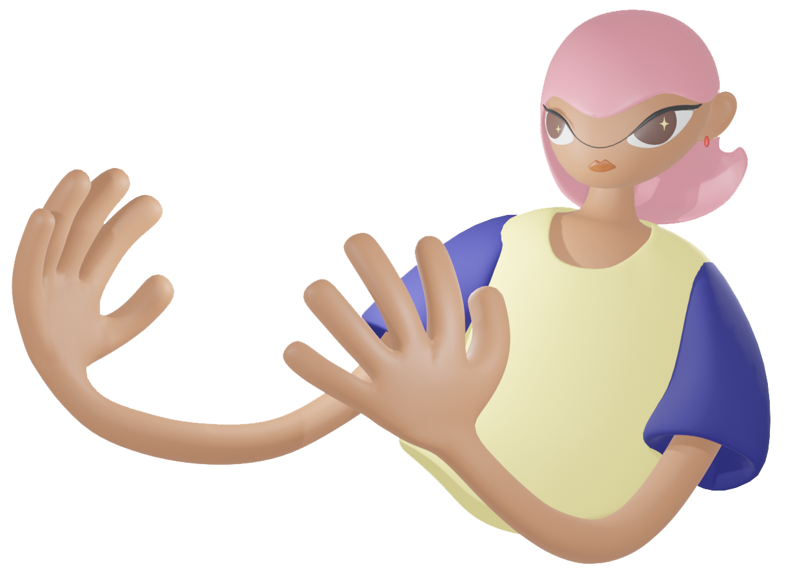

Kahani (कहानी) Ploessl is a dimension-bending tech artist whose work in generative, videogame, and installation art explores notions of the glitch and digital spiritualism. Guided by her Indian heritage, Kahani draws parallels between the cosmic philosophy of Hinduism and the pixelated manifestations of digital realms and avatar bodies. Her work considers the glitch as a purposeful gesture that can push our digital experiences away from their current structures and functions into experimental and transformative models for being.
